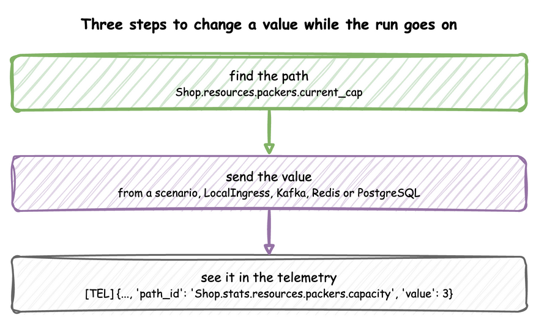
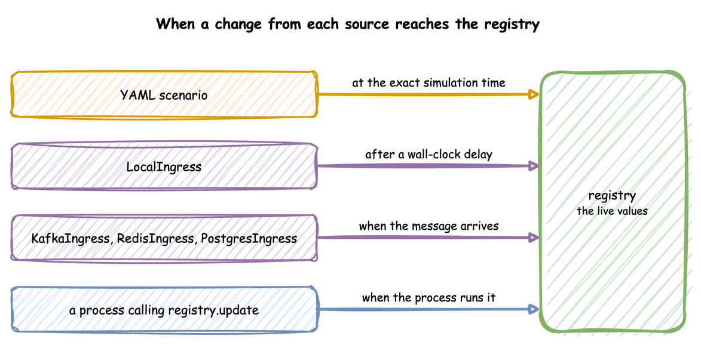
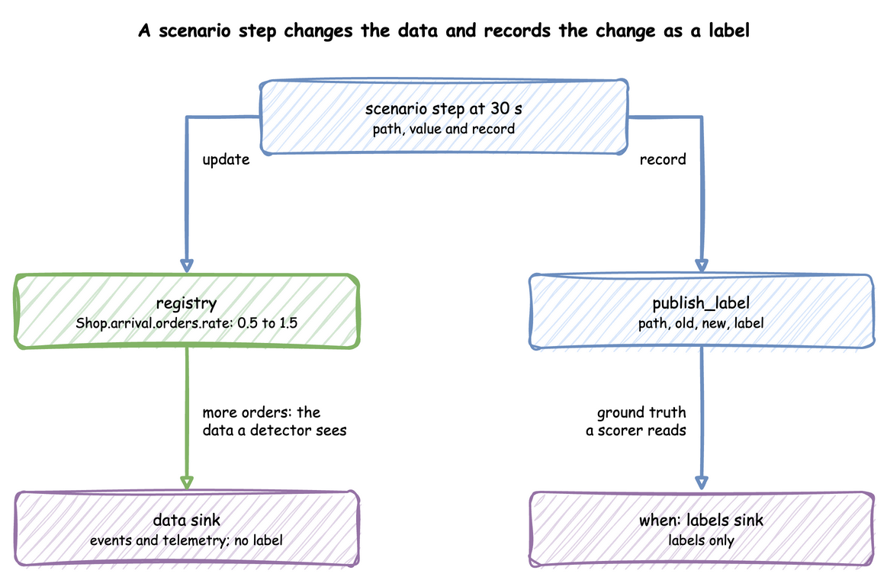
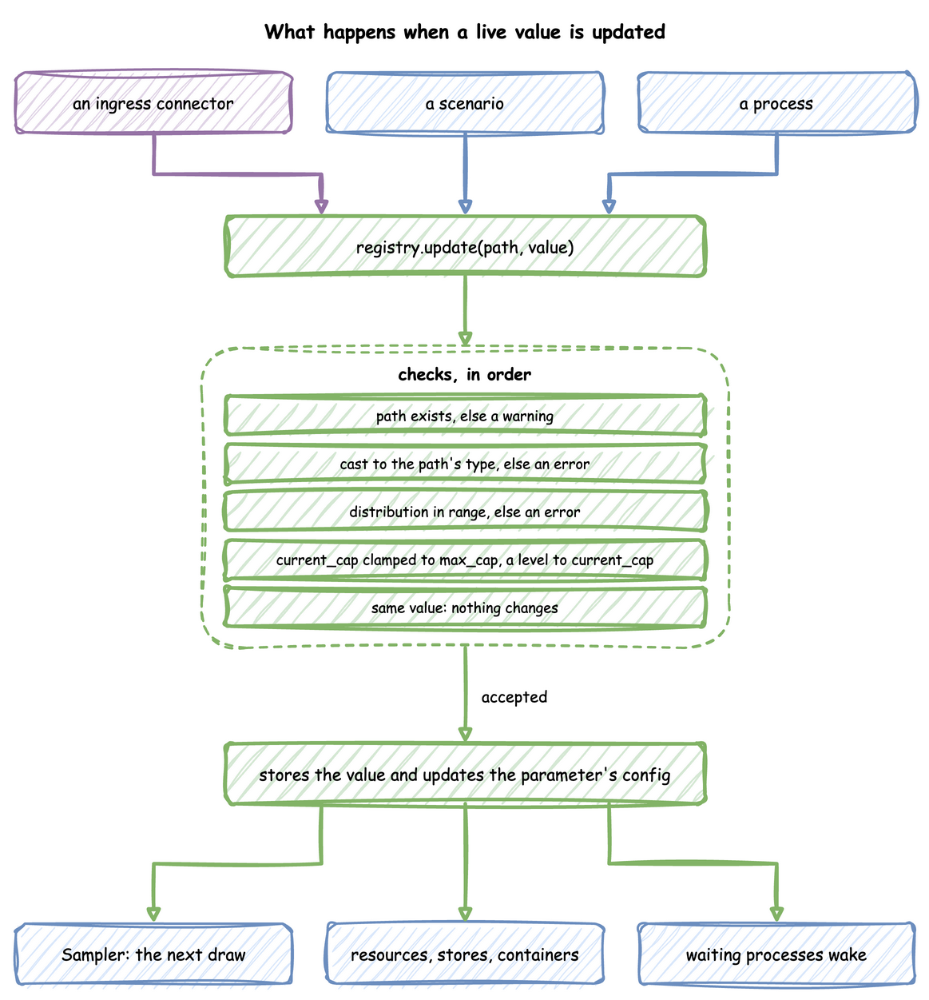

Live Parameters: SimulationRegistry
Every parameter of a run can change while the run goes on: an arrival rate, a number of packers, a stock level. This page shows how to name a parameter, the ways to change it, how to record what a change was for, and what happens to a value once it arrives.
What It Is
Every run has one SimulationRegistry, at env.registry. It maps dot-notation paths, such as Shop.resources.packers.current_cap, to the values the simulation reads. A scenario, an ingress connector or a process changes a parameter by updating its path, and the simulation follows the change without restarting. Changing a parameter takes three steps:

The tutorial page Live Changes teaches these features step by step.
How to Use It
Find the Path
A path is the sim_id, the kind of parameter, its name and the field:
| Declared with | Paths |
|---|---|
| an arrival or a service | <sim_id>.arrival.<name>.<parameter> and <sim_id>.service.<name>.<parameter>, one per scalar parameter of its family: .rate for an exponential, .mean and .std for a normal, .low, .mode and .high for a triangular, and so on; an empirical has none |
| a resource | <sim_id>.resources.<name>.current_cap and .max_cap |
| a container | <sim_id>.containers.<name>.current_cap, .max_cap and .level |
| a store | <sim_id>.stores.<name>.current_cap and .max_cap |
| a variable | <sim_id>.variables.<name> |
Arrivals and Services lists each family's parameters. An update to a path that does not exist, including a parameter the family does not take, is logged as a warning and ignored, so a misspelt path changes nothing.
A blueprint's paths follow from the names it declares, as the table above shows. To list them, load it with SimulationContext.from_yaml and call compile_parameters(), as the Builder tab does.
compile_parameters() returns the SimParameter a SimulationContext will register, which shows the names to use:
| docs/snippets/pages/live_parameters.py:compile | |
|---|---|
You register the parameters yourself, and read a value with registry.get(path).value:
Send a Value
Each source of a change suits a different job and lands at a different moment:
| Source | Use it for | Lands at |
|---|---|---|
a scenario: YAML scenario, builder add_scenario, low-level run_scenario |
an experiment that must repeat exactly | the exact simulation time given |
LocalIngress |
a local run with changes after set wall-clock delays | a wall-clock delay from the start |
KafkaIngress, RedisIngress, PostgresIngress |
an operator or another program steering a running model | when the message arrives |
a process calling env.registry.update |
a change that depends on the state of the simulation | when the process makes it |

Ingress gives the message each connector reads. A process changes a value directly:
A blueprint's process function, listed under processes, calls the same registry.update on context.env.registry, as Processes shows.
A builder process calls the same registry.update on context.env.registry, as Processes shows.
Script an Experiment
A blueprint's scenario lists changes, each with the simulation time it applies at. Here a second packer starts at 30 seconds. From one minute, orders arrive twice as fast: the average gap between orders falls from 5 seconds to 2.5 seconds (rate from 0.2 to 0.4). The extra packer leaves at two minutes:
add_scenario takes the same steps as a list of mappings, as Vary Arrivals by Time shows.
run_scenario takes the same steps as a list of mappings, and runs as a SimPy process, as Vary Arrivals by Time shows.
The builder and the low-level API take the same steps, as a list of mappings. Vary Arrivals by Time shows one schedule in each API.
A scenario is not a connector. It is a SimPy process that waits on the simulation clock, so each step lands at exactly its at, on every run and at any factor, including 0. Its steps follow these rules, and Vary Arrivals by Time shows each case:
- A step applies before every other event at its time, so an arrival gap drawn at that moment uses the new value.
- Steps at the same time apply in the order written.
- A step at or after
untilnever applies. - Every path of a blueprint's scenario is checked against the model's registry when the file loads, so a misspelt path stops the load with its line. The builder checks its paths when the run starts.
LocalIngress waits on the wall clock instead, and an unknown path is only logged when it is due. A scenario and an ingress connector can run together, so a scripted baseline can run while an operator changes values over Kafka. When both change the same path, the later write wins.
Record What a Change Was For
A detector or an agent that watches the data is scored against what really happened. A scenario step with a record publishes a ground-truth record of it: stream_type: "label", with the step's path, the value before (old) and after (new), and the step's record mapping as label. A step can have a record and no path, for something that happened outside the model, and then path, old and new are null.
| docs/snippets/yaml/ground_truth.yaml:record | |
|---|---|
add_scenario takes the same steps, record included. A process publishes a label itself with context.env.publish_label(label, path=..., old=..., new=...).
run_scenario takes the same steps, record included. A process publishes a label itself with env.publish_label(label, path=..., old=..., new=...).
Labels go only to sinks with when: labels, and those sinks receive nothing else. The labels therefore never reach the pipeline under test, and a scorer reads them apart from the data. Choose What Each Sink Gets shows the sinks of this blueprint.

The labels sink writes one file per batch under labels/, such as labels/labels_1a2b3c4d.jsonl, with one line per label:
In Python, env.publish_label(label, path=..., old=..., new=...) publishes one, and add_egress(sink, when="labels") or setup_egress(..., labels=[...]) makes a labels sink, as the measuring example shows.
How It Works
Registration. run(), or register_sim_parameter in the low-level API, flattens the SimParameter into the registry. The registry holds one DynamicValue per path, with the value and a change signal. Beside them, it keeps the configuration objects that the paths belong to, such as each DistributionConfig.
An update. registry.update(path, value) applies one change. The checks run in order, and an accepted value reaches the parts that read it:

- A path that does not exist is logged as a warning, and the update is ignored.
- A value of another type is converted to the type the path holds, so the string
"5"sent to an integer path becomes 5. Python's conversion is used, so 2.5 sent to an integer path becomes 2. A value that cannot be converted is logged as an error and ignored. - A distribution parameter is checked on a copy of its configuration, by the rules used at build. One out of range is logged as an error, and the old value stays.
- A
current_capoutside 0 tomax_cap, or a containerleveloutside 0 tocurrent_cap, is stored clamped to that range, with a warning. A lowermax_capclamps the storedcurrent_capthe same way. - A value equal to the current one changes nothing.
- Otherwise the value is stored, and the attribute of the configuration object is set too, found by splitting the path at its last dot:
Shop.service.packing.meansetsmeanon the object atShop.service.packing. TheSamplerreads that object at every draw, so it sees the new value.
Change Signal. Each value has a SimPy Store with one slot as its signal. An update puts a token in it if it is empty, and wait_for_change() waits for that token. The slot holds one token, so several changes before a waiter wakes give one signal, and only one waiting process takes it. Resources, stores and containers already wait on their own paths, and a token that your process takes does not reach them. Wait only on paths that nothing else waits on, such as variables:
A container's level also changes with every put and get. The registry keeps that level, so a reader sees it, but does not signal the container again.
Under Live Changes
What follows a change:
- Distributions. The next draw uses the new value. The arrival already being waited for keeps its gap, and a task that has drawn its service time keeps it.
- Resources, stores and containers. The capacity follows at once, and a container's level follows its path, as Resources and Stores and Containers describe.
- Variables. The new value is stored, and a process reads it with
env.registry.get(path).value.
A change is easiest to see in the telemetry. With stats: minimal, the scenario above shows the second packer land:
The reading at 30 seconds still shows 1. The resource applies a change within the same simulation instant, but after the step that made it. The reading was taken before that. The builder publishes the same readings with with_stats:
stats: minimal in the blueprint above publishes these readings every 10 seconds.
env.setup_stats("Shop", "minimal", interval=2.0) publishes the same readings, as Statistics shows.
Stability and Limits
- An unknown path is a warning, not an error, for an ingress message or a process. Only a scenario is checked when it loads.
- A family is fixed. There is no path that turns a
normalinto anexponential. That is a new model. - Several changes, one signal. A process waiting on a path wakes once for several changes made before it runs, and reads the latest value.
- Ingress lands on the wall clock. A message's change lands at whatever simulation time the run has reached when it arrives. A change that must happen at an exact simulation time needs a scenario step.